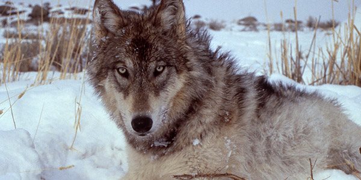
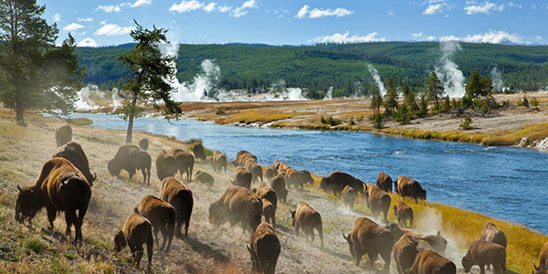
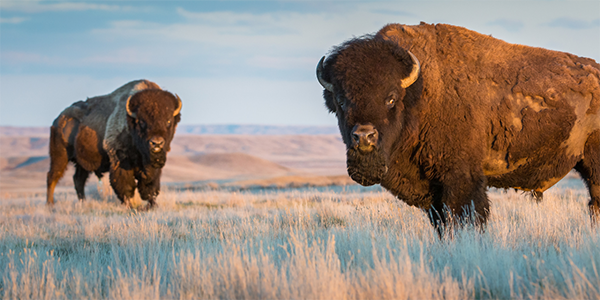
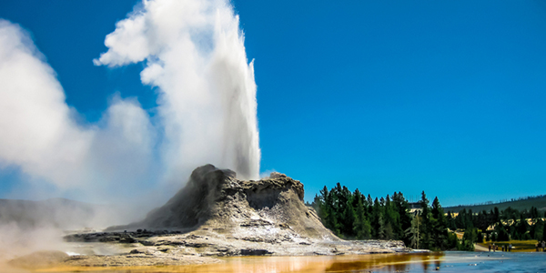
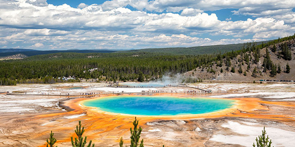

“It’s amazing how much more forest there is now, in places, than there used to be,” says paleoclimatologist Cathy Whitlock, who has been comparing historical photos of Yellowstone National Park with what can be seen today. She suspects that parts of the park were recovering from settlement-driven burning when it was established, but in the many years since, new forests grew, sparse forests filled in, and trees shifted in species composition. Whitlock has found, too, that many vast stands of trees have been plagued by invasive pests or destroyed by massive blazes after decades of fire suppression.
Even though Native Americans called Yellowstone home for more than 10,000 years, as Richard Grant reported for Smithsonian in 2021, the United States government has claimed protectorship over the 3,472 square miles since 1872. During those 150 years the absence of commercial or agricultural development has left many Indigenous sites fully intact and allowed archaeologists to better understand the area's millennia of human history. So, too, has this been a boon for scientists of other disciplines.
Whitlock's research on climate change is just a small part of the vast wealth of scientific research conducted by scientists in the park. “Part of the value of places like Yellowstone is that we can observe, in a kind of a natural science lab, how ecosystems change over time,” she says.
The park has been a hotbed of scientific study for decades, so here are some of the biggest changes scientists have observed in the nation’s oldest national park.
Wolves Were Removed and Returned
Wolves howled and prowled throughout the area long before the park was established. But the 1872 Congressional mandate to “provide against the wanton destruction of the fish and game” wasn’t applied to wolves, which were often viewed as a threat to more ‘desirable’ wild animals like elk and the livestock of local ranchers.
Yellowstone’s gray wolves were hunted and poisoned during the late 1800s and early 1900s. At least 136 were killed between 1914 and 1926 when the park’s last pack was eliminated. After half a century, the Endangered Species Act was passed in 1973 and the effort to return Yellowstone’s wolves began.
In 1995, 31 Canadian wolves were relocated to Yellowstone. Nearly 100 wolves now call the park home and more than 500 live in the 3,437 square- mile region that includes the park. Protected in the park, wolf populations have grown and are no longer listed as endangered. Far from universally popular, the predators are hunted in surrounding states. Two dozen wolves from park packs have been shot outside Yellowstone’s boundaries this winter alone. The hunt stokes tension between humans who view wolves as a threat to livestock and elk hunts, and those who promote their role as a key apex predator in the ecosystem.
The wolves’ return to the Yellowstone ecosystem is a fascinating natural experiment.
When Yellowstone’s wolves were gone (and its mountain lions diminished) the park’s elk population spiked so much that culling was practiced to keep the herd in check. When culling was stopped in 1968 the year-round population swelled from 5,000 to nearly 20,000 elk. Since wolf reintroduction, elk numbers have dropped again to about 6,000. Research suggests that the wolves are helping to create a smaller but more stable, healthy and resilient elk herd, which no longer grows in good times to devour all available food resources and starve en masse during bad years.
Reintroducing wolves after a century’s absence is also impacting many other animal and plant species across the ecosystem. When they kill elk, for example, wolves provide food for scavengers like ravens and coyotes. But untangling less obvious wolf impacts is keeping scientists busy and sparking debate.
In the absence of wolves, large elk herds continually grazed young willow, aspen and cottonwoods. So wolf predation may result in tree growth that in turn boosts populations of other animals, like birds, that depend on trees. But other research suggests the extent of wolf impact on young tree growth, simply by reducing elk numbers, is debatable. Trees are thriving in some areas and not others, while variables like weather and climate also play major roles in tree growth. So do other species, like beavers, who depend on willows and in turn create condtions to stimulate their growth.
Untangling the wolf’s role in in the changing Yellowstone ecosystem can be a complicated endeavor. But one thing seems beyond debate—the return of wolves has proven to be one of the major ecotourist attractions in today’s park.
A Shrinking Greater Yellowstone Ecosystem Is Squeezing Park Wildlife
Though they were tweaked by President Herbert Hoover, Yellowstone’s original borders haven’t changed all that much. But the wild natural habitat available in the Greater Yellowstone Ecosystem, an area ten times larger than the park itself, has been shrinking dramatically. That’s a problem for the many animals that frequently cross park borders.
Montana State University ecologists Andrew Hansen and Linda Phillips published a comprehensive study gauging the health of the Greater Yellowstone Ecosystem and found that since 1970, the ecosystem’s human population has doubled and housing density has tripled. Both are projected to double again by 2050.
Human development now covers an estimated 31 percent of the Great Yellowstone Ecosystem. “Rural homes more or less ring the public land on all sides of the park. It’s rather stunning to me to look at a map of all the homes that now surround the park,” Hansen says. “And changes in these private lands surrounding the park really influences what happens in the park.”
Many elk, bison, pronghorn and other ungulates summer in the park but in winter head to lower elevations, and increasingly developed private lands, where they aren’t always welcome and are frequently hunted. Ranging animals, like grizzlies, are more frequently being killed on roads or getting into trouble with humans outside of the boundaries. Connectivity between ecosystems, like subalpine mountain forests loved by Wolverines, is reduced by roads and developments making it dangerous for animals to travel between patches of habitats that can support them.
Problematic species enter the park from bordering lands as well. Invasive grasses and plants spread towards the park from horse and livestock grazing, and non-native species, like the eastern smallmouth bass which poses a grave threat to the park’s iconic trout populations, have been recently caught just outside of the park boundaries.
But the most notable change in the ecosystem is the number of humans present in the region and the ways they impact it. Though the park itself has been slow to acknowledge the fact, Yellowstone was never a wilderness untouched by humans. For thousands of years indigenous communities traveled throughout the park's man-made borders, living sustainably in low-lying areas during the colder months and the higher plateau regions in the spring. They were displaced during Yellowstone National Park’s earliest years, during a time when tourist visitors were numbered in the hundreds.
Today more than four million people visit each year. Large crowds, and even backcountry trail users, frequently push animals from areas where they feed, rest or even mate. “Between all the development surrounding the park, and the increased number of people who are recreating on public lands in and around the park, the pressures have built quite dramatically,” Hansen says.
“I often wonder what the first visitors saw when they went to Yellowstone. It must be so different than what we see today. But now I also wonder what my granddaughter going to see in the next few decades. Will she even recognize the places that I love in Yellowstone?” -- Cathy Whitlock
Bison Herds Are Thriving Again
The days of North America’s great bison herds were already past when the park was established. Shifting climate produced some prolonged dry years for grassland forage, and the range was increasingly coveted for livestock. At the same time a mid-19th-century boom in bison hunting, fueled by the hide market, led to unsustainable slaughter. Only about two dozen bison lived in the park by the 1880s, in Pelican Valley, and their plight provided an opportunity for an unprecedented attempt to recover populations of a large grazing herbivore.
In 1902, 21 bison were purchased from private hands and raised at the Lamar Buffalo Ranch. These mingled and bred with the few free-roaming animals left and, while protected within the park, grew to a herd of about 1,300 animals by the 1950s.
Today, as any visitor can attest, Yellowstone’s bison population is doing well. The population fluctuates between 2,300 and 5,500 animals. As bison numbers increase, the hungry mammals frequently stray outside park boundaries where they are often not welcome, particularly because they can spread disease to cattle. For population control, several Native American tribes and the state of Montana sponsor limited bison hunts near the border. Park officials also trap bison at the northern border, sending some to the slaughter while transferring others to populate new areas, including Native American lands, under the Bison Conservation Transfer Program.
Grazing bison, and their piles of poop, fuel a cycle of nutrient rich soils and plants. When bison much on the tops of grasses they stimulate new plant growth, producing more of the productive foods that they and other herbivores rely on. In this way the bison engineer the ecosystem in Yellowstone. But not everyone agrees that the system is in balance. At least one study suggests the park’s iconic wildlife haven, the Lamar Valley, is being overgrazed by bison. Researchers say the bison are wiping out vegetation and the authors suspect the animals didn’t live in the valley in large numbers during prehistoric periods. Other experts disagree. The debate highlights challenges in trying to manage the park ecosystem. Though tasked since 1872 with preserving the park in a ‘natural condition,’ scientists aren’t always sure exactly what Yellowstone looked like in the past.
Geysers Wax and Wane a Lot
Yellowstone’s subterranean volcanic system fuels an unrivaled landscape of some 10,000 geothermal features, more than the rest of the world combined. Bubbling mudpots, rainbow-hued hot springs and a legendary concentration of geysers give vent to hot water and steam in sometimes spectacular fashion. The volcanic system is subject to complex fluctuations and even the park’s most famously reliable attraction, Old Faithful, has shifted its explosions over the years. In the 1870s, when geological surveyors began to observe the geyser, the time between its eruptions was 60 to 70 minutes. During the 1950s, however, the period began changing and today’s average is 94 minutes. Notable earthquakes in 1959, 1975 and 1983 lengthened the time between eruptions.
Other changes have been more extreme. Steamboat Geyser, the world’s tallest active geyser at some 400 feet, erupted infrequently throughout most of the park’s history—sometimes stretching as long as 50 years between major events. But in March 2018, after staying quiet for three years, Steamboat began cutting loose at an incredible rate of nearly once a week. Steamboat also enjoyed active phases during the 1960s and early 1980s, and scientists are still unraveling all the complex factors that drive such changes. One possible clue—Steamboat sits atop a Chicago-sized area of the Norris Geyser Basin that for two decades has been moving up and down by as much as five inches in a year. This is likely caused by intrusions of magma that releases superheated gasses. When those gasses are trapped below rock, the system swells and the surface literally rises— until the gasses find an escape route and their release causes the ground to subside again.
The volatile nature of the complex system beneath the surface means that future change is certain. Scientists believe that Old Faithful once shut down entirely some 800 years ago, during a period of extreme droughts when there was not enough water coursing through the area’s subterranean plumbing to fuel the geyser’s eruptions. If Yellowstone’s future is increasingly drier, as experts expect, Old Faithful and other park geysers might not have enough water to put on the spectacular shows visitors love to watch.
The Park Is Warmer and Drier
A comprehensive scientific report released last year details the way the park’s climate has shifted since its founding. “One thing for sure, it was a lot colder then,” says Whitlock, who co-authored the study. “The early days in the park were really cold, and the summers weren’t as hot.”
Since 1950 annual temperatures have increased by 2.3 degrees Fahrenheit, resulting in a Yellowstone that’s as warm as it has been during any period of the past 20,000 years. Growing seasons in the park’s valleys have increased by nearly a month during that time. The warmer temperatures mean that more precipitation falls as rain rather than snow, and annual snowfall is down almost two feet from 1950. Spring thaw happens earlier by a factor of several weeks, with the peak of spring runoff coursing through rivers and streams eight days earlier. The reduced snowpack means a smaller reservoir of stored water and a landscape that may be more susceptible to fire.
All of those changes add up to a shifting landscape for Yellowstone’s inhabitants. “It’s a problem for the animals and plants that call the park home,” Whitlock says. Hot, dry summers may reduce the forage elk need to survive, for example, while waters become too warm for trout. More frequent fires may ravage forests, and, in a different climate, regeneration may look a lot different than it did 150 years ago.
When poring over evidence of how much the park has changed in the past, Whitlock’s thoughts also run to the future. “I often wonder what the first visitors saw when they went to Yellowstone” she says. “It must be so different than what we see today. But now I also wonder what my granddaughter going to see in the next few decades. Will she even recognize the places that I love in Yellowstone?”